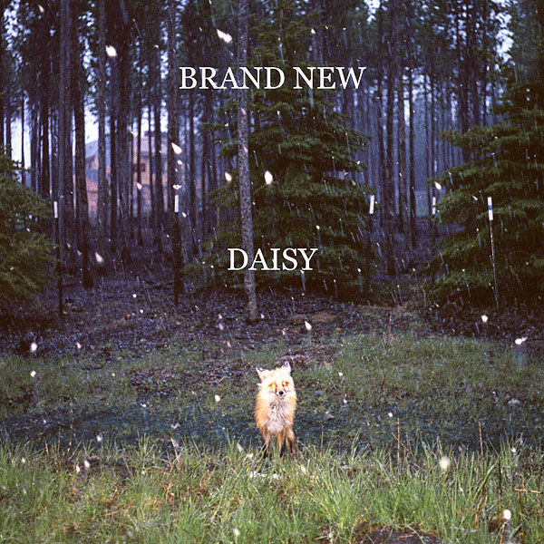

10
Kevin Devine
Brother's Blood
Brooklyn song-writer Kevin Devine recently caught my attention (yes, I'm a bit late to the party), thanks to the fact that he often tours with Jesse Lacey, frontman of Brand New, a band who I'm a rather big fan of. Despite this association, Kevin's folk sound is rather distant from said band, falling more in line with the likes of Elliott Smith. Brother's Blood's sound ranges from stripped down acoustics to 8 minute long dynamic guitar-driven anthems, and certainly isn't short on emotion. Gutted I missed Kevin performing in Dublin earlier this year along with Manchester Orchestra.
9
Frank Turner
Poetry of the Deed
Frank Turner's third full-length solo album brings more solid folk songs from the English Ex-Million Dead frontman, covering the usual Turner subjects of life on the road, partying with friends and discontent with the government and society in general. Whilst not quite as good as previous album "Love, Ire & Song", it remains a solid mix of upbeat sing-a-longs (The Road, Poetry of the Deed), reflective ballads (Isabel, Faithful Son) and rants (Sons of Liberty, Try This At Home).
8
Mono
Hymn To The Immortal Wind
First instrumental album of the chart and its a band who are definitely no strangers in the 'post-rock' scene. I never really got into Mono before, but decided to give this album a go regardless. Opening track Ashes in the Snow (featured below) really grabbed my attention: a beautiful 11 minute epic with sweeping guitar crescendos, crashing drums and emotionally powerful melodies. It turns out this description can pretty much be used to describe most of the album. A great way to lose yourself for an hour.
7
Last year's debut album from Fuck Buttons, entitled "Street Horrrsing" didn't sit quite right with me. It showed potential, but lacked substance and overall just sounded too much like noise and not much else. Their second album "Tarot Sport" sees the Bristol-based electronic duo team up with electronic veteran Andrew Weatherall. This time they really nail it. There is an obvious difference in clarity with this album, with tracks being much more structured and melodic - more like songs, as opposed to just noise. Highlights include the thumping opener Surf Solar (featured below), the euphoric Olympians and closer Flight of the Feathered Serpent. If you didn't quite get Fuck Buttons the first time around, give them another go.
6
Caspian are an instrumental band somewhat typical of 'post-rock', yet they manage to stand out from many others thanks to their ability to create great melodies. Ever since the excellent You Are the Conducter, Caspian have been very much consistent with their releases and Tertia is certainly no exception. From the atmospheric opening of Mie, right through to the epic closer Sycamore, Tertia somehow manages to keep a fresh sound in a formula that has been almost done to death.
5
Phoenix
Wolfgang Amadeus Phoenix
My first encounter with Phoenix was Too Young, a standout track on the "Lost in Translation" film soundtrack. Their latest album Wolfgang Amadeus Phoenix is a great collection of uplifting pop-rock tracks, extremely easy to tap your foot to and extremely difficult to dislike.
4
Brand New's fourth album was always going to be difficult to deliver on - after all, how do you follow the classic Deja Entendu and almost equally excellent The Devil and God Are Raging Inside Me? Well, Daisy isn't a bad attempt at trying. This time around the band have delegated song-writing duties out a bit more, rather than Jesse Lacey writing the large majority of songs. Whether or not this is the reason for the album not quite reaching the heights of its predecessors we can never be sure, but Daisy still holds quite a few moments of greatness - At The Bottom, You Stole and Bought a Bride are all top notch Brand New tracks. Despite sometimes feeling a bit lazy, Daisy's prime moments still place it as one of the albums of the year.

3
...And You Will Know Us By The Trail of Dead
The Century of Self
Trail of Dead pull off a real return to form with The Century of Self, following a couple of lackluster albums. My expectations for this album weren't exactly high, but I was pleasantly surprised. The album starts on a real high, with the instrumental opener Giants Causeway leading into Far Pavillions, then on to the highlight track of the album Isis Unveiled (featured below). Elsewhere on the album there are plenty more highlights: Bells of Creation and Ascending see the band in fine rocking form, whilst quieter moments like Luna Park and Insatiable fully showcase the band's flexibility when it comes to writing great songs. A must-get album, with fantastic artwork too.
2
And So I Watch You From Afar
And So I Watch You From Afar
This is a full on, balls out instrumental punk rock fest that, even now after a year of listening to, I still find myself stomping and rocking along to regardless of where I am or what I'm doing. As I mentioned in the review, these guys really have to be seen live to appreciate, so should the opportunity arise for you - do it.
1
New York three-piece The Antlers is the brainchild of Peter Silberman, who initially started the project as a solo endeavour. Hospice was initially self-released by the band in March of this year, selling a huge number of copies, and later signed by French Kiss Records who released a remastered version of the album in August.
The album is a haunting tale of meeting and falling in love with a cancer patient, caring for them and having to experience their from the bedside. It deals with experiences while the patient is still alive and the memories, nightmares and loneliness that occur once they are gone. It should definitely be noted that, given the concept, this isn't an easy album to listen to on an emotional level, particularly for those who have lost someone close to them.
Musically, the album is a mixture of both sweeping ambience and more upbeat (musically that is) anthemic tracks, often simplistic in nature but beautifully produced with a very progressive, almost Pink Floyd style layering that adds huge depth to the experience.
Its been a long time since I found an album that really stirred so much emotion in me. I have been lucky enough never to have lost anyone so close to me, and yet this album still connects and evokes all sorts of feelings each time I listen to it. In particular, the albums closer, Epilogue, is ridiculously beautiful and moving. I was fortunate to catch the guys playing in Dublin in October, which was a fantastic experience given that they played Hospice in its entirety.
It was difficult to select a track to place at the bottom of this post, as I really feel Hospice needs to be heard in its entirety to appreciate just how great The Antlers are. Please do yourself a favour and check this album out. It may take a few listens, but in the end you may find yourself listening to one of your favourite albums of recent times like I did.